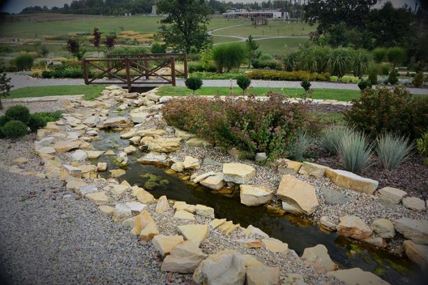

Śląski Ogród Botaniczny w Mikołowie
Śląski Ogród Botaniczny w Mikołowie to największy w Polsce ogród botaniczny istniejący od 2003 roku jako Związek Stowarzyszeń. W jego skład wchodzą: Województwo Śląskie, Polska Akademia Nauk, Uniwersytet Śląski, Powiat Mikołowski, Powiat Raciborski, Gmina Mikołów, Gmina Radzionków, Gmina Racibórz, Gmina Lyski, Towarzystwo Przyjaciół Ślaskiego Ogrodu Botanicznego, Towarzystwo Miłośników Ziemi Raciborskiej, Stowarzyszenie Wspólnota, Stowarzyszenie Golf Park Mikołów, Rudzkie Towarzystwo Przyjaciół Drzew. Członkiem wspierającym jest Górnośląskie Towarzystwo Lotnicze SA. Związek ten ma formułę otwartą dla innych samorządów, stowarzyszeń i instytucji naukowych. W 2006 roku Związek otrzymał zgodę ministra środowiska na prowadzenie ogrodu botanicznego.
Misją Śląskiego Ogrodu Botanicznego jest działalność na rzecz ochrony różnorodności biologicznej, poprzez uprawę na swoim terenie rzadkich i zagrożonych gatunków roślin oraz ich przenoszenie z warunków uprawy do właściwych im siedlisk, zachowanie cennych, a zanikających upraw polnych i łąkowych oraz starych odmian drzew owocowych. Nie bez znaczenia jest działalność polegająca na prowadzeniu edukacji przyrodniczej i ekologicznej wśród dzieci i młodzieży oraz dorosłych.
Misja Ogrodu realizowana jest m.in. poprzez tworzenie przestrzeni chroniącej różnorodność biologiczną Śląska oraz strefy klimatu umiarkowanego dla dobra współczesnych i przyszłych pokoleń; rezentację kolekcji roślin, umożliwiającą poznawanie gatunków chronionych; prowadzenie badań naukowych, aktywny udział w kształtowaniu postawy proekologicznej wśród mieszkańców regionu oraz propagowanie informacji na temat sposobów zachowaniabioróżnorodności.